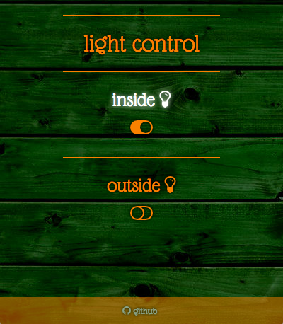

My Shed Has An API
Lessons from a project that got out of hand
Sam Pikesley
@pikesley
Lesson #0: Have a mate who wants to get shot of a solar panel
Lesson #1: Sometimes you need more grunt
int relays[] = { 4, 5, 6, 7 };
int inputs[] = { 8, 9, 10, 11 };
int count = 4;
void setup() {
for (int r = 0; r < count; r++) {
pinMode(relays[r], OUTPUT);
pinMode(inputs[r], INPUT);
}
}
void loop() {
for (int v = 0; v < count; v++) {
digitalWrite(relays[v],
digitalRead(inputs[v]));
}
}
https://github.com/pikesley/relay-puller
Lesson #2: Arduino programming is easier than you think
Lesson #3: The Raspberry Pi pin layout is an unspeakable shambles
RESTful API
/lights/:light
GET /lights/:light/on
GET /lights/:light/off
POST /lights/:light
{
state: on
}
PUT /lights/:light
{
state: on
}
PATCH /lights/:light
{
state: on
}
Lesson #4: Learn to love the HTTP verbs
(also, waste people's time)
GET /lights/inside
{
inside: on
}
https://www.w3.org/2001/tag/group/track/issues/14
 https://github.com/pikesley/shedbot
Lesson #5: Install some actual physical switches
What else can I do with this?